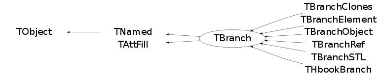

class TBranch: public TNamed, public TAttFill
A TTree is a list of TBranches A TBranch supports: - The list of TLeaf describing this branch. - The list of TBasket (branch buffers). See TBranch structure in TTree. See also specialized branches: TBranchObject in case the branch is one object TBranchClones in case the branch is an array of clone objects
Function Members (Methods)
public:
| TBranch() | |
| TBranch(TTree* tree, const char* name, void* address, const char* leaflist, Int_t basketsize = 32000, Int_t compress = -1) | |
| TBranch(TBranch* parent, const char* name, void* address, const char* leaflist, Int_t basketsize = 32000, Int_t compress = -1) | |
| virtual | ~TBranch() |
| void | TObject::AbstractMethod(const char* method) const |
| virtual void | AddBasket(TBasket& b, Bool_t ondisk, Long64_t startEntry) |
| virtual void | AddLastBasket(Long64_t startEntry) |
| virtual void | TObject::AppendPad(Option_t* option = "") |
| virtual void | Browse(TBrowser* b) |
| static TClass* | Class() |
| virtual const char* | TObject::ClassName() const |
| virtual void | TNamed::Clear(Option_t* option = "") |
| virtual TObject* | TNamed::Clone(const char* newname = "") const |
| virtual Int_t | TNamed::Compare(const TObject* obj) const |
| virtual void | TNamed::Copy(TObject& named) const |
| virtual void | TObject::Delete(Option_t* option = "")MENU |
| virtual void | DeleteBaskets(Option_t* option = "") |
| virtual Int_t | TObject::DistancetoPrimitive(Int_t px, Int_t py) |
| virtual void | TObject::Draw(Option_t* option = "") |
| virtual void | TObject::DrawClass() constMENU |
| virtual TObject* | TObject::DrawClone(Option_t* option = "") constMENU |
| virtual void | DropBaskets(Option_t* option = "") |
| virtual void | TObject::Dump() constMENU |
| virtual void | TObject::Error(const char* method, const char* msgfmt) const |
| virtual void | TObject::Execute(const char* method, const char* params, Int_t* error = 0) |
| virtual void | TObject::Execute(TMethod* method, TObjArray* params, Int_t* error = 0) |
| virtual void | TObject::ExecuteEvent(Int_t event, Int_t px, Int_t py) |
| void | ExpandBasketArrays() |
| virtual void | TObject::Fatal(const char* method, const char* msgfmt) const |
| virtual Int_t | Fill() |
| virtual void | TNamed::FillBuffer(char*& buffer) |
| virtual TBranch* | FindBranch(const char* name) |
| virtual TLeaf* | FindLeaf(const char* name) |
| virtual TObject* | TObject::FindObject(const char* name) const |
| virtual TObject* | TObject::FindObject(const TObject* obj) const |
| Int_t | FlushBaskets() |
| Int_t | FlushOneBasket(UInt_t which) |
| virtual char* | GetAddress() const |
| TBasket* | GetBasket(Int_t basket) |
| Int_t* | GetBasketBytes() const |
| Long64_t* | GetBasketEntry() const |
| virtual Long64_t | GetBasketSeek(Int_t basket) const |
| virtual Int_t | GetBasketSize() const |
| virtual TList* | GetBrowsables() |
| virtual const char* | GetClassName() const |
| Int_t | GetCompressionAlgorithm() const |
| Int_t | GetCompressionLevel() const |
| Int_t | GetCompressionSettings() const |
| TDirectory* | GetDirectory() const |
| virtual Option_t* | TObject::GetDrawOption() const |
| static Long_t | TObject::GetDtorOnly() |
| Long64_t | GetEntries() const |
| virtual Int_t | GetEntry(Long64_t entry = 0, Int_t getall = 0) |
| virtual Int_t | GetEntryExport(Long64_t entry, Int_t getall, TClonesArray* list, Int_t n) |
| Long64_t | GetEntryNumber() const |
| Int_t | GetEntryOffsetLen() const |
| Int_t | GetEvent(Long64_t entry = 0) |
| virtual Int_t | GetExpectedType(TClass*& clptr, EDataType& type) |
| virtual TFile* | GetFile(Int_t mode = 0) |
| const char* | GetFileName() const |
| virtual Color_t | TAttFill::GetFillColor() const |
| virtual Style_t | TAttFill::GetFillStyle() const |
| Long64_t | GetFirstEntry() const |
| virtual const char* | GetIconName() const |
| virtual TLeaf* | GetLeaf(const char* name) const |
| TObjArray* | GetListOfBaskets() |
| TObjArray* | GetListOfBranches() |
| TObjArray* | GetListOfLeaves() |
| virtual Bool_t | GetMakeClass() const |
| Int_t | GetMaxBaskets() const |
| TBranch* | GetMother() const |
| virtual const char* | TNamed::GetName() const |
| Int_t | GetNleaves() const |
| virtual char* | TObject::GetObjectInfo(Int_t px, Int_t py) const |
| static Bool_t | TObject::GetObjectStat() |
| Int_t | GetOffset() const |
| virtual Option_t* | TObject::GetOption() const |
| Int_t | GetReadBasket() const |
| Long64_t | GetReadEntry() const |
| virtual Int_t | GetRow(Int_t row) |
| Int_t | GetSplitLevel() const |
| TBranch* | GetSubBranch(const TBranch* br) const |
| virtual const char* | TNamed::GetTitle() const |
| Long64_t | GetTotalSize(Option_t* option = "") const |
| Long64_t | GetTotBytes(Option_t* option = "") const |
| TTree* | GetTree() const |
| virtual UInt_t | TObject::GetUniqueID() const |
| Int_t | GetWriteBasket() const |
| Long64_t | GetZipBytes(Option_t* option = "") const |
| virtual Bool_t | TObject::HandleTimer(TTimer* timer) |
| virtual ULong_t | TNamed::Hash() const |
| virtual void | TObject::Info(const char* method, const char* msgfmt) const |
| virtual Bool_t | TObject::InheritsFrom(const char* classname) const |
| virtual Bool_t | TObject::InheritsFrom(const TClass* cl) const |
| virtual void | TObject::Inspect() constMENU |
| void | TObject::InvertBit(UInt_t f) |
| virtual TClass* | IsA() const |
| Bool_t | IsAutoDelete() const |
| virtual Bool_t | TObject::IsEqual(const TObject* obj) const |
| virtual Bool_t | IsFolder() const |
| Bool_t | TObject::IsOnHeap() const |
| virtual Bool_t | TNamed::IsSortable() const |
| virtual Bool_t | TAttFill::IsTransparent() const |
| Bool_t | TObject::IsZombie() const |
| virtual void | KeepCircular(Long64_t maxEntries) |
| virtual Int_t | LoadBaskets() |
| virtual void | TNamed::ls(Option_t* option = "") const |
| void | TObject::MayNotUse(const char* method) const |
| virtual void | TAttFill::Modify() |
| virtual Bool_t | TObject::Notify() |
| void | TObject::Obsolete(const char* method, const char* asOfVers, const char* removedFromVers) const |
| static void | TObject::operator delete(void* ptr) |
| static void | TObject::operator delete(void* ptr, void* vp) |
| static void | TObject::operator delete[](void* ptr) |
| static void | TObject::operator delete[](void* ptr, void* vp) |
| void* | TObject::operator new(size_t sz) |
| void* | TObject::operator new(size_t sz, void* vp) |
| void* | TObject::operator new[](size_t sz) |
| void* | TObject::operator new[](size_t sz, void* vp) |
| virtual void | TObject::Paint(Option_t* option = "") |
| virtual void | TObject::Pop() |
| virtual void | Print(Option_t* option = "") const |
| virtual Int_t | TObject::Read(const char* name) |
| virtual void | ReadBasket(TBuffer& b) |
| virtual void | TObject::RecursiveRemove(TObject* obj) |
| virtual void | Refresh(TBranch* b) |
| virtual void | Reset(Option_t* option = "") |
| virtual void | ResetAddress() |
| virtual void | ResetAfterMerge(TFileMergeInfo*) |
| virtual void | TAttFill::ResetAttFill(Option_t* option = "") |
| void | TObject::ResetBit(UInt_t f) |
| static void | ResetCount() |
| virtual void | ResetReadEntry() |
| virtual void | TObject::SaveAs(const char* filename = "", Option_t* option = "") constMENU |
| virtual void | TAttFill::SaveFillAttributes(ostream& out, const char* name, Int_t coldef = 1, Int_t stydef = 1001) |
| virtual void | TObject::SavePrimitive(ostream& out, Option_t* option = "") |
| virtual void | SetAddress(void* add) |
| virtual void | SetAutoDelete(Bool_t autodel = kTRUE) |
| virtual void | SetBasketSize(Int_t buffsize) |
| void | TObject::SetBit(UInt_t f) |
| void | TObject::SetBit(UInt_t f, Bool_t set) |
| virtual void | SetBufferAddress(TBuffer* entryBuffer) |
| void | SetCompressionAlgorithm(Int_t algorithm = 0) |
| void | SetCompressionLevel(Int_t level = 1) |
| void | SetCompressionSettings(Int_t settings = 1) |
| virtual void | TObject::SetDrawOption(Option_t* option = "")MENU |
| static void | TObject::SetDtorOnly(void* obj) |
| virtual void | SetEntries(Long64_t entries) |
| virtual void | SetEntryOffsetLen(Int_t len, Bool_t updateSubBranches = kFALSE) |
| virtual void | SetFile(TFile* file = 0) |
| virtual void | SetFile(const char* filename) |
| virtual void | TAttFill::SetFillAttributes()MENU |
| virtual void | TAttFill::SetFillColor(Color_t fcolor) |
| virtual void | TAttFill::SetFillStyle(Style_t fstyle) |
| virtual void | SetFirstEntry(Long64_t entry) |
| virtual Bool_t | SetMakeClass(Bool_t decomposeObj = kTRUE) |
| virtual void | TNamed::SetName(const char* name)MENU |
| virtual void | TNamed::SetNameTitle(const char* name, const char* title) |
| virtual void | SetObject(void* objadd) |
| static void | TObject::SetObjectStat(Bool_t stat) |
| virtual void | SetOffset(Int_t offset = 0) |
| virtual void | SetStatus(Bool_t status = 1) |
| virtual void | TNamed::SetTitle(const char* title = "")MENU |
| virtual void | SetTree(TTree* tree) |
| virtual void | TObject::SetUniqueID(UInt_t uid) |
| virtual void | SetupAddresses() |
| virtual void | ShowMembers(TMemberInspector& insp) |
| virtual Int_t | TNamed::Sizeof() const |
| virtual void | Streamer(TBuffer& b) |
| void | StreamerNVirtual(TBuffer& b) |
| virtual void | TObject::SysError(const char* method, const char* msgfmt) const |
| Bool_t | TObject::TestBit(UInt_t f) const |
| Int_t | TObject::TestBits(UInt_t f) const |
| virtual void | UpdateAddress() |
| virtual void | UpdateFile() |
| virtual void | TObject::UseCurrentStyle() |
| virtual void | TObject::Warning(const char* method, const char* msgfmt) const |
| virtual Int_t | TObject::Write(const char* name = 0, Int_t option = 0, Int_t bufsize = 0) |
| virtual Int_t | TObject::Write(const char* name = 0, Int_t option = 0, Int_t bufsize = 0) const |
protected:
| virtual void | TObject::DoError(int level, const char* location, const char* fmt, va_list va) const |
| void | FillLeavesImpl(TBuffer& b) |
| TBasket* | GetFreshBasket() |
| TString | GetRealFileName() const |
| void | Init(const char* name, const char* leaflist, Int_t compress) |
| void | TObject::MakeZombie() |
| void | ReadLeaves0Impl(TBuffer& b) |
| void | ReadLeaves1Impl(TBuffer& b) |
| void | ReadLeaves2Impl(TBuffer& b) |
| void | ReadLeavesImpl(TBuffer& b) |
| void | SetSkipZip(Bool_t skip = kTRUE) |
| Int_t | WriteBasket(TBasket* basket, Int_t where) |
Data Members
public:
| enum EStatusBits { | kAutoDelete | |
| kDoNotUseBufferMap | ||
| }; | ||
| enum TObject::EStatusBits { | kCanDelete | |
| kMustCleanup | ||
| kObjInCanvas | ||
| kIsReferenced | ||
| kHasUUID | ||
| kCannotPick | ||
| kNoContextMenu | ||
| kInvalidObject | ||
| }; | ||
| enum TObject::[unnamed] { | kIsOnHeap | |
| kNotDeleted | ||
| kZombie | ||
| kBitMask | ||
| kSingleKey | ||
| kOverwrite | ||
| kWriteDelete | ||
| }; |
protected:
| char* | fAddress | ! Address of 1st leaf (variable or object) |
| Int_t* | fBasketBytes | [fMaxBaskets] Lenght of baskets on file |
| Long64_t* | fBasketEntry | [fMaxBaskets] Table of first entry in eack basket |
| Long64_t* | fBasketSeek | [fMaxBaskets] Addresses of baskets on file |
| Int_t | fBasketSize | Initial Size of Basket Buffer |
| TObjArray | fBaskets | -> List of baskets of this branch |
| TObjArray | fBranches | -> List of Branches of this branch |
| TList* | fBrowsables | ! List of TVirtualBranchBrowsables used for Browse() |
| Int_t | fCompress | Compression level and algorithm |
| TBasket* | fCurrentBasket | ! Pointer to the current basket. |
| TDirectory* | fDirectory | ! Pointer to directory where this branch buffers are stored |
| Long64_t | fEntries | Number of entries |
| TBuffer* | fEntryBuffer | ! Buffer used to directly pass the content without streaming |
| Long64_t | fEntryNumber | Current entry number (last one filled in this branch) |
| Int_t | fEntryOffsetLen | Initial Length of fEntryOffset table in the basket buffers |
| TString | fFileName | Name of file where buffers are stored ("" if in same file as Tree header) |
| Color_t | TAttFill::fFillColor | fill area color |
| G__p2memfunc | fFillLeaves | ! Pointer to the FillLeaves implementation to use. |
| Style_t | TAttFill::fFillStyle | fill area style |
| Long64_t | fFirstBasketEntry | ! First entry in the current basket. |
| Long64_t | fFirstEntry | Number of the first entry in this branch |
| TObjArray | fLeaves | -> List of leaves of this branch |
| Int_t | fMaxBaskets | Maximum number of Baskets so far |
| TBranch* | fMother | ! Pointer to top-level parent branch in the tree. |
| Int_t | fNBaskets | ! Number of baskets in memory |
| TString | TNamed::fName | object identifier |
| Long64_t | fNextBasketEntry | ! Next entry that will requires us to go to the next basket |
| Int_t | fNleaves | ! Number of leaves |
| Int_t | fOffset | Offset of this branch |
| TBranch* | fParent | ! Pointer to parent branch. |
| Int_t | fReadBasket | ! Current basket number when reading |
| Long64_t | fReadEntry | ! Current entry number when reading |
| G__p2memfunc | fReadLeaves | ! Pointer to the ReadLeaves implementation to use. |
| Bool_t | fSkipZip | ! After being read, the buffer will not be unziped. |
| Int_t | fSplitLevel | Branch split level |
| TString | TNamed::fTitle | object title |
| Long64_t | fTotBytes | Total number of bytes in all leaves before compression |
| TTree* | fTree | ! Pointer to Tree header |
| Int_t | fWriteBasket | Last basket number written |
| Long64_t | fZipBytes | Total number of bytes in all leaves after compression |
| static Int_t | fgCount | ! branch counter |
Class Charts
{kind=link}
{kind=link}
{kind=link}
{kind=link}

Function documentation
TBranch(TTree* tree, const char* name, void* address, const char* leaflist, Int_t basketsize = 32000, Int_t compress = -1)
Create a Branch as a child of a Tree
* address is the address of the first item of a structure
or the address of a pointer to an object (see example in TTree.cxx).
* leaflist is the concatenation of all the variable names and types
separated by a colon character :
The variable name and the variable type are separated by a
slash (/). The variable type must be 1 character. (Characters
after the first are legal and will be appended to the visible
name of the leaf, but have no effect.) If no type is given, the
type of the variable is assumed to be the same as the previous
variable. If the first variable does not have a type, it is
assumed of type F by default. The list of currently supported
types is given below:
- C : a character string terminated by the 0 character
- B : an 8 bit signed integer (Char_t)
- b : an 8 bit unsigned integer (UChar_t)
- S : a 16 bit signed integer (Short_t)
- s : a 16 bit unsigned integer (UShort_t)
- I : a 32 bit signed integer (Int_t)
- i : a 32 bit unsigned integer (UInt_t)
- F : a 32 bit floating point (Float_t)
- D : a 64 bit floating point (Double_t)
- L : a 64 bit signed integer (Long64_t)
- l : a 64 bit unsigned integer (ULong64_t)
- O : [the letter 'o', not a zero] a boolean (Bool_t)
Arrays of values are supported with the following syntax:
If leaf name has the form var[nelem], where nelem is alphanumeric, then
if nelem is a leaf name, it is used as the variable size of the array,
otherwise return 0.
The leaf referred to by nelem **MUST** be an int (/I),
If leaf name has the form var[nelem], where nelem is a non-negative integers, then
it is used as the fixed size of the array.
If leaf name has the form of a multi dimension array (e.g. var[nelem][nelem2])
where nelem and nelem2 are non-negative integers) then
it is used as a 2 dimensional array of fixed size.
Any of other form is not supported.
Note that the TTree will assume that all the item are contiguous in memory.
On some platform, this is not always true of the member of a struct or a class,
due to padding and alignment. Sorting your data member in order of decreasing
sizeof usually leads to their being contiguous in memory.
* bufsize is the buffer size in bytes for this branch
The default value is 32000 bytes and should be ok for most cases.
You can specify a larger value (e.g. 256000) if your Tree is not split
and each entry is large (Megabytes)
A small value for bufsize is optimum if you intend to access
the entries in the Tree randomly and your Tree is in split mode.
See an example of a Branch definition in the TTree constructor.
Note that in case the data type is an object, this branch can contain
only this object.
Note that this function is invoked by TTree::Branch
TBranch(TBranch* parent, const char* name, void* address, const char* leaflist, Int_t basketsize = 32000, Int_t compress = -1)
void Init(const char* name, const char* leaflist, Int_t compress)
Initialization routine called from the constructor. This should NOT be made virtual.
void DeleteBaskets(Option_t* option = "")
Loop on all branch baskets. If the file where branch buffers reside is writable, free the disk space associated to the baskets of the branch, then call Reset(). If the option contains "all", delete also the baskets for the subbranches. The branch is reset. NOTE that this function must be used with extreme care. Deleting branch baskets fragments the file and may introduce inefficiencies when adding new entries in the Tree or later on when reading the Tree.
void DropBaskets(Option_t* option = "")
Loop on all branch baskets. Drop all baskets from memory except readbasket. If the option contains "all", drop all baskets including read- and write-baskets (unless they are not stored individually on disk). The option "all" also lead to DropBaskets being called on the sub-branches.
void ExpandBasketArrays()
Increase BasketEntry buffer of a minimum of 10 locations and a maximum of 50 per cent of current size.
Int_t Fill()
Loop on all leaves of this branch to fill Basket buffer. The function returns the number of bytes committed to the memory basket. If a write error occurs, the number of bytes returned is -1. If no data are written, because e.g. the branch is disabled, the number of bytes returned is 0.
Int_t FillEntryBuffer(TBasket* basket, TBuffer* buf, Int_t& lnew)
Copy the data from fEntryBuffer into the current basket.
Int_t FlushBaskets()
Flush to disk all the baskets of this branch and any of subbranches. Return the number of bytes written or -1 in case of write error.
Int_t FlushOneBasket(UInt_t which)
If we have a write basket in memory and it contains some entries and has not yet been written to disk, we write it and delete it from memory. Return the number of bytes written;
TList* GetBrowsables()
Returns (and, if 0, creates) browsable objects for this branch See TVirtualBranchBrowsable::FillListOfBrowsables.
const char * GetClassName() const
Return the name of the user class whose content is stored in this branch, if any. If this branch was created using the 'leaflist' technique, this function returns an empty string.
Int_t GetEntry(Long64_t entry = 0, Int_t getall = 0)
Read all leaves of entry and return total number of bytes read. The input argument "entry" is the entry number in the current tree. In case of a TChain, the entry number in the current Tree must be found before calling this function. For example: TChain* chain = ...; Long64_t localEntry = chain->LoadTree(entry); branch->GetEntry(localEntry); The function returns the number of bytes read from the input buffer. If entry does not exist, the function returns 0. If an I/O error occurs, the function returns -1. See IMPORTANT REMARKS in TTree::GetEntry.
Int_t GetEntryExport(Long64_t entry, Int_t getall, TClonesArray* list, Int_t n)
Read all leaves of an entry and export buffers to real objects in a TClonesArray list. Returns total number of bytes read.
Int_t GetExpectedType(TClass*& clptr, EDataType& type)
Fill expectedClass and expectedType with information on the data type of the object/values contained in this branch (and thus the type of pointers expected to be passed to Set[Branch]Address return 0 in case of success and > 0 in case of failure.
TFile* GetFile(Int_t mode = 0)
Return pointer to the file where branch buffers reside, returns 0 in case branch buffers reside in the same file as tree header. If mode is 1 the branch buffer file is recreated.
TBasket* GetFreshBasket()
Return a fresh basket by either resusing an existing basket that needs to be drop (according to TTree::MemoryFull) or create a new one.
TString GetRealFileName() const
Int_t GetRow(Int_t row)
Return all elements of one row unpacked in internal array fValues [Actually just returns 1 (?)]
Bool_t GetMakeClass() const
Return whether this branch is in a mode where the object are decomposed or not (Also known as MakeClass mode).
TBranch* GetSubBranch(const TBranch* br) const
Find the parent branch of child. Return 0 if child is not in this branch hierarchy.
Long64_t GetTotalSize(Option_t* option = "") const
Return total number of bytes in the branch (including current buffer)
Long64_t GetTotBytes(Option_t* option = "") const
Return total number of bytes in the branch (excluding current buffer)
if option ="*" includes all sub-branches of this branch too
Long64_t GetZipBytes(Option_t* option = "") const
Return total number of zip bytes in the branch
if option ="*" includes all sub-branches of this branch too
Int_t LoadBaskets()
Baskets associated to this branch are forced to be in memory. You can call TTree::SetMaxVirtualSize(maxmemory) to instruct the system that the total size of the imported baskets does not exceed maxmemory bytes. The function returns the number of baskets that have been put in memory. This method may be called to force all baskets of one or more branches in memory when random access to entries in this branch is required. See also TTree::LoadBaskets to load all baskets of all branches in memory.
void Reset(Option_t* option = "")
Reset a Branch. Existing buffers are deleted. Entries, max and min are reset.
void ResetAfterMerge(TFileMergeInfo* )
Reset a Branch. Existing buffers are deleted. Entries, max and min are reset.
void SetAutoDelete(Bool_t autodel = kTRUE)
Set the automatic delete bit. This bit is used by TBranchObject::ReadBasket to decide if an object referenced by a TBranchObject must be deleted or not before reading a new entry. If autodel is kTRUE, this existing object will be deleted, a new object created by the default constructor, then read from disk by the streamer. If autodel is kFALSE, the existing object is not deleted. Root assumes that the user is taking care of deleting any internal object or array (this can be done in the streamer).
void SetBasketSize(Int_t buffsize)
Set the basket size The function makes sure that the basket size is greater than fEntryOffsetlen
void SetBufferAddress(TBuffer* entryBuffer)
-- Set address of this branch directly from a TBuffer to avoid streaming. Note: We do not take ownership of the buffer.
void SetCompressionAlgorithm(Int_t algorithm = 0)
void SetCompressionLevel(Int_t level = 1)
void SetCompressionSettings(Int_t settings = 1)
void SetEntryOffsetLen(Int_t len, Bool_t updateSubBranches = kFALSE)
Update the default value for the branch's fEntryOffsetLen if and only if it was already non zero (and the new value is not zero) If updateExisting is true, also update all the existing branches.
void SetFile(TFile* file = 0)
Set file where this branch writes/reads its buffers. By default the branch buffers reside in the file where the Tree was created. If the file name where the tree was created is an absolute path name or an URL (e.g. /castor/... or root://host/...) and if the fname is not an absolute path name or an URL then the path of the tree file is prepended to fname to make the branch file relative to the tree file. In this case one can move the tree + all branch files to a different location in the file system and still access the branch files. The ROOT file will be connected only when necessary. If called by TBranch::Fill (via TBasket::WriteFile), the file will be created with the option "recreate". If called by TBranch::GetEntry (via TBranch::GetBasket), the file will be opened in read mode. To open a file in "update" mode or with a certain compression level, use TBranch::SetFile(TFile *file).
void SetFile(const char* filename)
Set file where this branch writes/reads its buffers. By default the branch buffers reside in the file where the Tree was created. If the file name where the tree was created is an absolute path name or an URL (e.g. /castor/... or root://host/...) and if the fname is not an absolute path name or an URL then the path of the tree file is prepended to fname to make the branch file relative to the tree file. In this case one can move the tree + all branch files to a different location in the file system and still access the branch files. The ROOT file will be connected only when necessary. If called by TBranch::Fill (via TBasket::WriteFile), the file will be created with the option "recreate". If called by TBranch::GetEntry (via TBranch::GetBasket), the file will be opened in read mode. To open a file in "update" mode or with a certain compression level, use TBranch::SetFile(TFile *file).
Bool_t SetMakeClass(Bool_t decomposeObj = kTRUE)
Set the branch in a mode where the object are decomposed (Also known as MakeClass mode). Return whether the setting was possible (it is not possible for TBranch and TBranchObject).
Int_t WriteBasket(TBasket* basket, Int_t where)
Write the current basket to disk and return the number of bytes written to the file.
void SetupAddresses()
-- If the branch address is not set, we set all addresses starting with the top level parent branch.
void UpdateFile()
Refresh the value of fDirectory (i.e. where this branch writes/reads its buffers) with the current value of fTree->GetCurrentFile unless this branch has been redirected to a different file. Also update the sub-branches.